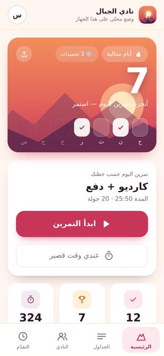
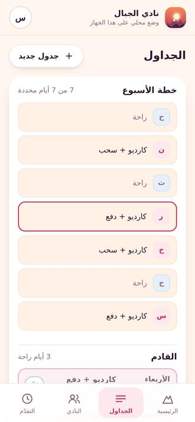
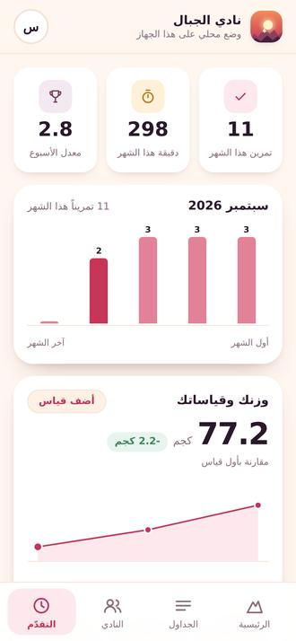

رتّب أسبوعك مرة واحدة، وافتح التطبيق كل يوم تلقى تمرينك بانتظارك. مجاني، بالعربي، ويشتغل بلا إنترنت.

كل شاشة تجاوب على سؤال واحد، فما تضيع بين القوائم.

تحدد لكل يوم جدوله مرة واحدة، فيعرف التطبيق تمرين اليوم بنفسه ويعرض لك القادم قبل أن يحين.
تختار أيام راحتك، ويعبر العدّاد فوقها. الرقم يحسب أيام تدرّبت فيها فعلاً.
يقرأ اسم التمرين بصوت، ويحسب الراحة بين المجموعات، وتكمل بلا ما تمسك الجوال.

أرقام الشهر الجاري وحدها. يدخل شهر جديد فتبدأ من الصفر، فلا يختبئ تراخي هذا الأسبوع خلف مجموع سنة كاملة. ومعها مؤشرات جسمك محسوبة من قياساتك أنت.
اختر تمارينك من مكتبة جاهزة أو اكتب تمارينك بنفسك، وحدد وقت كل تمرين وراحته.
اربط كل يوم بجدول أو حدده يوم راحة. بعدها ما تختار شيئاً كل صباح.
المؤقّت يمشي بنفسه من الإحماء إلى التهدئة. وإن تدرّبت خارج التطبيق سجّله بلمستين.
التطبيق مجاني ولا يعرض إعلانات ولا يبيع بياناتك. ما نجمع موقعك ولا جهات اتصالك.
ابدأ اليوم. أول تمرين يبدأ العدّاد، وما بعده يصير أسهل.
افتح التطبيق